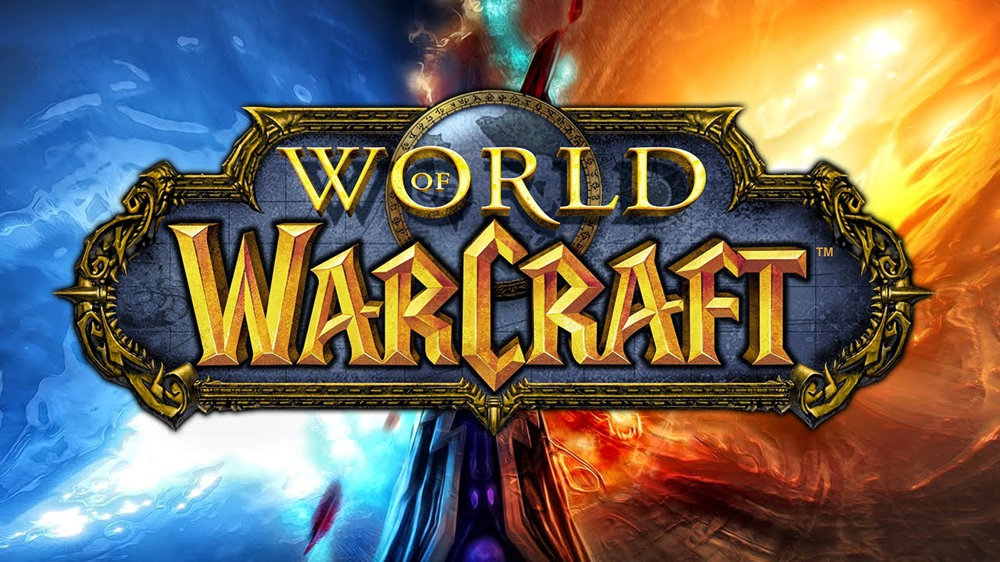

The First MMO Game
The first recorded MMO game is called Meridian 59, which was released in 1995. It has the typical setting of swords and sorcery, where adventurers go and fight monsters. The game contains many features that laters games would duplicate, such as voting systems in guilds, customized sigils, and guild halls that can be gained or lost.

World of Warcraft
World of Warcraft (WoW) was released in 2004. It allows you to select different races that have their own specific skills. It has you go out and fight different monsters, or people if that is what you are looking for, as well as go on raids against dungeons which has you go through the dungeon defeating mobs until you get to the end boss, which depending on its difficulty, will you give you higher tier loot. WoW has players pay for a subscription that is montly, whilst you can also pay for expansion packs either online or from retailers.
